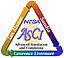
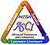

- Develop an open-source, multi-platform visualization application.
- Support distributed computation models to process large data sets.
- Create an open, flexible, and intuitive user interface.
- Develop an extensible architecture based on open standards.
The Origins of ParaView
ParaView is being developed by Kitware in
conjunction with Jim Ahrens of the
Advanced Computing Laboratory
at Los Alamos National Laboratory. ParaView is funded by the US Department
of Energy ASCI Views
program as part of a three-year contract awarded to Kitware, Inc. by a
consortium of three National Labs - Los Alamos, Sandia, and Livermore.
The goal of the project is to develop scalable parallel processing tools
with an emphasis on distributed memory implementations. The project includes
parallel algorithms, infrastructure, I/O, support, and display devices. One
significant feature of the contract is that all software developed is to be
delivered open source. Hence ParaView is available as an open-source system.
 
